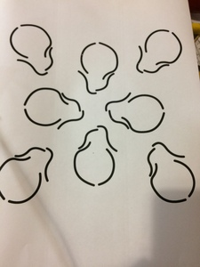

Background light array intended to have graphic eqauliser display
addded at later date. utilising MSQEG7 ic......
After purchasing several FAKE ICs I started on my
own. Using LM358 & LM386 ICs I have made a
simple 4 channel bandpass filter arrangement using passive and
active filtering. It still needs work but is good enough
for a basic display.
I have now completed the circuitry and it is as is available
on my GitHub repo for download. Schematics and PCB layouts are
made in Kicad. All through hole componentry is used ,
Test piece to get an idea of how ot would look
Still shot of nearly finished graphics equaliser display
Another still shot of graphic EQ display

Backing for light display
Yet again another still shot of EQ display
The nearly finished garphics equaliser display
The nearly finished garphics equaliser display
skull petal backing for graphics eqauliser display